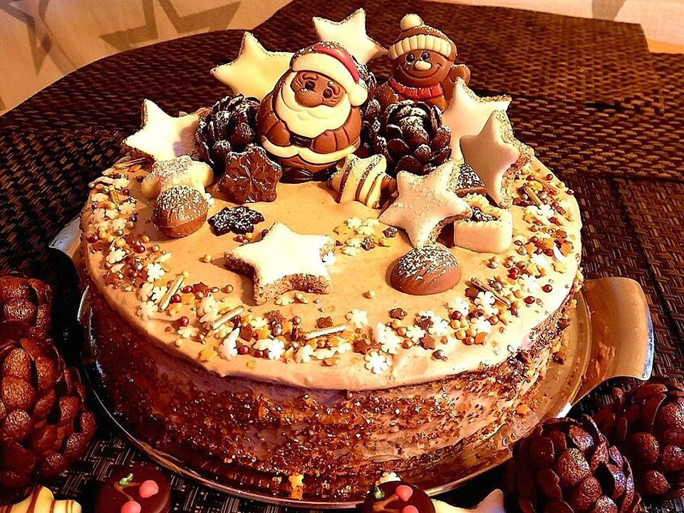

Zimtsterntorte
Zutaten für 1 Portionen
- Für den Boden:
- 5 Ei(er)
- 125 g Zucker
- 1 Prise(n) Salz
- 150 g Mandel(n), gemahlene
- 50 g Speisestärke
- 1 TL Zimt
- 60 g Butter
- Für die Creme:
- 400 g Sahne
- 2 Pkt. Sahnesteif
- 75 g Zucker
- 400 g Schmand
- 1 ½ TL Zimt
- Für die Dekoration: (Zimtsterne)
- 1 Eiweiß
- 100 g Puderzucker
- 125 g Mandel(n), gemahlene
- 1 TL Vanillezucker
- ½ TL Zimt
Zubereitung
Arbeitszeit ca. 1 Stunde 10 Minuten Koch-/Backzeit ca. 1 Stunde 5 Minuten Gesamtzeit ca. 2 Stunden 15 Minuten
FÜR DIE DEKO: Fangt mit den Zimtsternen an und schlagt das Eiweiß zu Eischnee. Nach und nach den gesiebten Puderzucker unterrühren. Davon 30 g abmachen und für die Deko aufheben. Unter den Rest nun den Zimt, Vanillezucker und 100 g gemahlene Mandeln rühren. So viel vom Rest der Mandeln verkneten, bis der Teig nicht mehr klebrig ist und ausgerollt werden kann. Den Backofen auf 120°C vorheizen. Etwas Puderzucker auf der Arbeitsfläche verstreuen und den Teig 1 cm dick ausrollen. Die Sterne ausstechen und auf ein Blech mit Backpapier legen. Einen Klecks Guss in die Mitte der Sterne setzen und in die Ecken ziehen. Die Zimtsterne für 25 Min. backen. Lasst sie auf einem Rost abkühlen. FÜR DEN TORTENBODEN: Den Ofen auf 170 °C vorheizen und den Boden einer Springform mit Backpapier auslegen. Den Springformring draufsetzen, festziehen und überstehendes Backpapier abschneiden. Die Backform nicht einfetten. Einen großen Topf mit etwas Wasser füllen und zum Köcheln bringen. Einen kleineren Topf oder hitzebeständige Schale darüber hängen. Dabei sollte das Wasser den kleinen Topf nicht berühren. Eier, Zucker und die Prise Salz in den kleinen Topf füllen und mit einem Schneebesen ca. 8 Min. schaumig schlagen. Die Eigelbmasse sollte dabei nicht zu heiß werden, sonst stockt das Eigelb. Die Masse anschließend in eine Schüssel geben und mit einem Handrührgerät auf höchster Stufe 10 Min. schlagen bis eine dicke Creme entsteht. In einer zweiten Schüssel die gemahlenen Mandeln, Speisestärke und Zimt vermischen und löffelweise mit einem Schneebesen unter die Creme heben. Dabei ist etwas Fingerspitzengefühl gefragt, damit die Masse nicht ihre luftige Konsistenz verliert, aber die trockenen Zutaten vollständig verteilt werden. Jetzt kann die Butter geschmolzen und ebenfalls mit dem Schneebesen untergehoben werden. Den fertigen Teig füllt ihr in die Springform und backt ihn im Ofen für 35 - 40 Min. Den Mandeltortenboden lasst ihr vollständig auf einem Kuchengitter abkühlen bevor ihr ihn teilt. Zum Teilen nehmt ein Messer und schneidet ihn rundum leicht ein. Nehmt einen reißfesten Faden und schneidet ihn entzwei. FÜR DIE CREME: Die Sahne mit Sahnesteif aufschlagen. Zucker und Zimt vermischen und in die Sahne einrieseln lassen. Weiter schlagen bis sie steif ist. Schmand mit einem Schneebesen unterheben. Etwas weniger als die Hälfte der Schmandcreme auf dem Tortenboden verstreichen. Den Deckel darauf legen und den Rest oben und an den Seiten verstreichen. Die Torte mit etwas Zimt bestäuben und die Zimtsterne darauf verteilen. Einige Zimtsterne können auch auf unterschiedlich lange Holzspieße aufgespießt werden und in die Tortenmitte gesteckt werden. Fertig ist die Zimtsterntorte.Rezept von: dashonigkuchenpferd Rezept